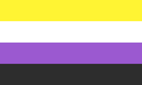
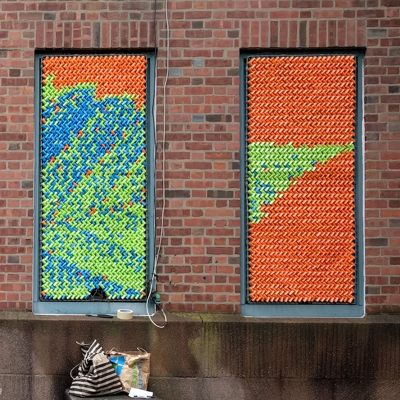
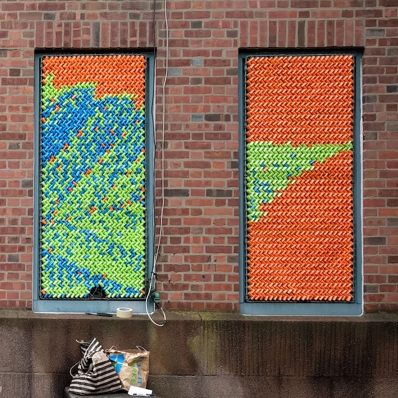

Daniel Bernier
...is a piano technician, public artist, and software engineer living in Rhode Island.
They are nonbinary, and use they/them pronouns. 
As piano technician
They are the secretary and librarian for the Rhode Island chapter of the Piano Technician's Guild. They study under Maggie Jusiel, are mentored by Amy Tiernan and Ruth Van Dine, and work for Loiselle Pianos.
As public artist
They partner with Dan Gries to make physical-pixel works that play with how our eyes resolve an image, and are designed to be built with the community.
Selected works:
- HANDS, with Rita Lombardi for Ball & Socket, Cheshire 2025
- Tapestry, New Haven 2019
- Animals, New Haven CWOS 2015
- Marilyn, New Haven Re:Generate 2014
Their portfolio has more of their public and generative art projects.
As software engineer
They've worked for startups, non-profits, and large enterprises. In 2013 they co-founded NewHaven.io, and in 2015, as its board member, they participated in the first national Tech Meetup at the White House.
Selected employment:- TED conferences
- Anchor.dev: cryptography and certificates
- Daylight: queer banking
- Continuity, pre-acquisition: community banking
- SeeClickFix, pre-acquisition: municipal accountability and civic engagement

 
